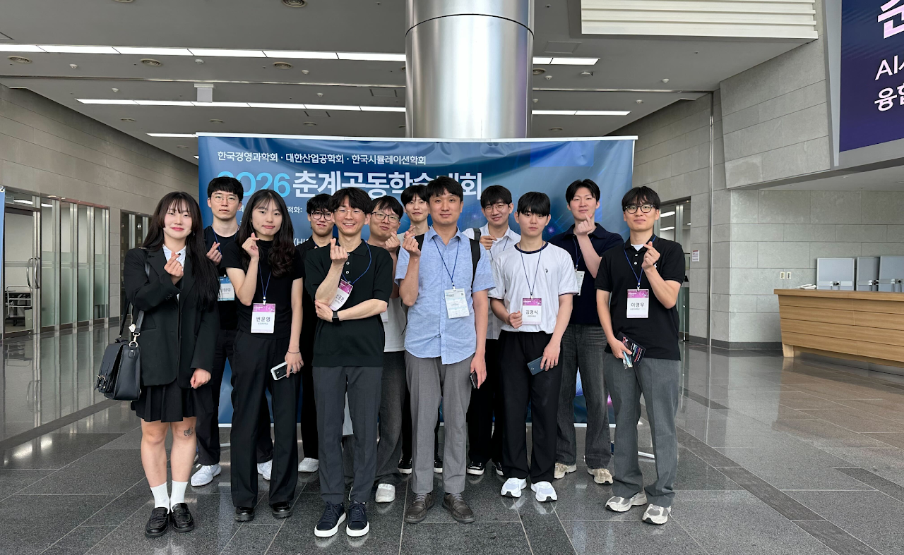
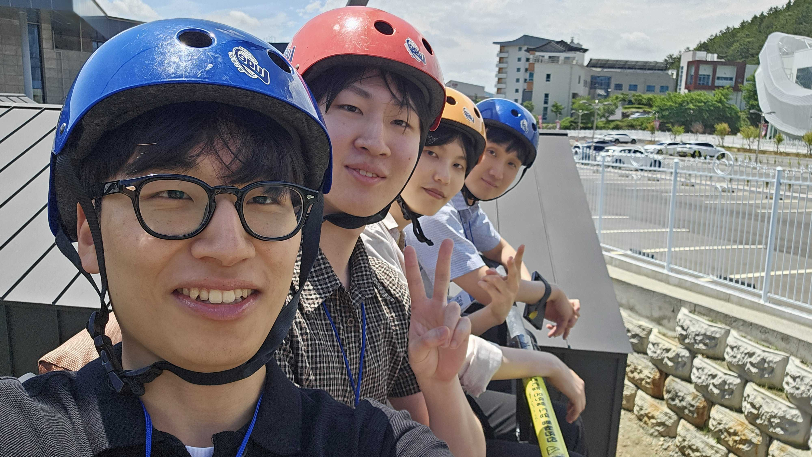

MLFE Lab attended the 2026 KORMS Spring Joint Conference, held in Gyeongju. Most of our lab members participated in the conference and presented their research in oral and poster sessions. Great job, everyone. 🥹

Conference
Oral and poster presentations in Gyeongju.

MLFE Lab attended the 2026 KORMS Spring Joint Conference, held in Gyeongju. Most of our lab members participated in the conference and presented their research in oral and poster sessions. Great job, everyone. 🥹
